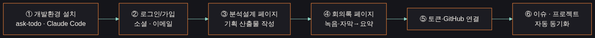
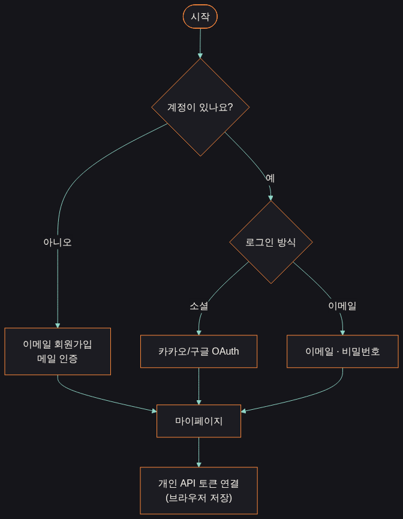
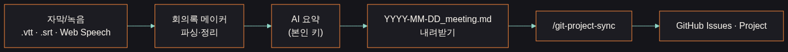
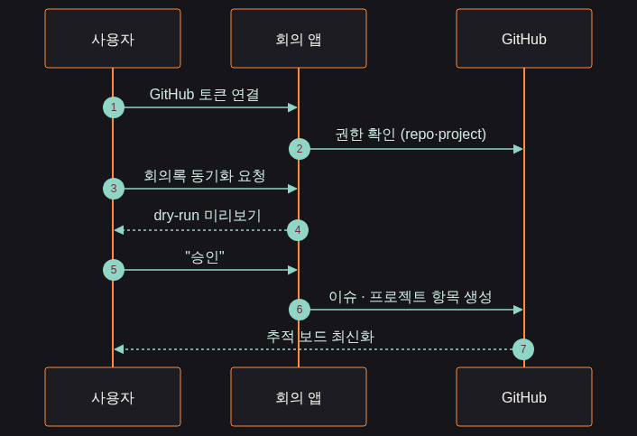

Overview · 전체 흐름
6단계로 끝내는 사용 흐름

① 설치 · ② 가입
개발환경·ask-todo·Claude Code를 준비하고, 소셜 또는 이메일 인증으로 들어갑니다.
③ 분석설계 · ④ 회의록
기획 산출물을 단계별로 만들고, 녹음·자막을 AI 요약으로 정리합니다.
⑤ 연결 · ⑥ 추적
토큰을 연결하면 할 일이 GitHub 이슈·프로젝트로 넘어가 추적됩니다.
Step 1 · 설치
개발환경 · ask-todo · 하네스 설치
1
Claude Code + gh CLI 준비
- Claude Code 설치 후 로그인
- GitHub CLI(gh) 설치 →
gh auth login - 이 두 가지가 GitHub 연결·이슈 생성의 기반입니다.
2
planning-harness 플러그인 설치
claude plugin marketplace add feed-mina/planning-harness
claude plugin install planning-harness@feed-mina-harness- 8개 스킬이 프로젝트에 추가됩니다.
3
ask-todo 자동 기록 설치
- ask-todo-hub로 대화·작업을 ASK/Todo에 누적
- "오늘 대화 ASK에 기록" 한 마디로 로그 생성
- git 근거 기반, 추측 없이 append 보존.
4
프로젝트 설정 (.harness/config.env)
- OWNER / PROJECT_NUMBER / REPO 지정
- 우선순위: 환경변수 > config.env > 기본값
- 회의록→GitHub 동기화 대상이 여기서 정해집니다.
Step 2 · 가입 / 로그인
소셜 로그인 · 이메일 가입 · 토큰 연결
이메일 가입은 메일 인증 후 마이페이지로, 소셜은 카카오/구글 OAuth로 즉시 진입합니다. 개인 API 키는 브라우저에만 저장됩니다.

Step 3 · 분석설계 페이지
기획 산출물을 단계별로 생성
1
/split-requirements
- 기능을 요구사항으로 분해 → requirements.md
- 승인 게이트에서 멈추고 모호한 점을 되묻습니다.
2
/user-flow · /sequence-diagram
- 분기·예외를 사용자 플로우와 시퀀스 다이어그램으로 시각화
- 승인 불필요
3
/logic-check
- 정상·예외·보안·성능 테스트 케이스를 도출
4
/search-documents
- 기존 spec.md·산출물에서 근거 문서를 검색해 일관성 유지
Step 4 · 회의록 페이지
녹음·자막 → AI 요약 → 추적 연결
자막(.vtt/.srt)·브라우저 녹음을 파싱하고 본인 키로 AI 요약합니다. 출력 Markdown이 곧 동기화 입력이 됩니다.

Step 5–6 · GitHub 연결 & 추적
토큰 연결 → 승인 → 이슈·프로젝트
토큰을 연결하면 회의록의 할 일이 dry-run 미리보기 → "승인" → GitHub Issues·Project 항목으로 생성됩니다. 승인 없이는 아무것도 쓰지 않습니다.

Principle · 원칙
승인 게이트 — 안전한 자동화
⚠️ 승인 게이트
요구사항 분해·테스트·Git 반영·핸드오프는 사람이 "승인"하기 전까지 외부에 쓰지 않습니다.
🔑 본인 키
AI 요약·분석은 브라우저 localStorage의 사용자 본인 키로만 호출됩니다.
📁 산출물 보존
모든 결과물은 outputs/<날짜>/ 에 누적되어 추적·재현이 가능합니다.